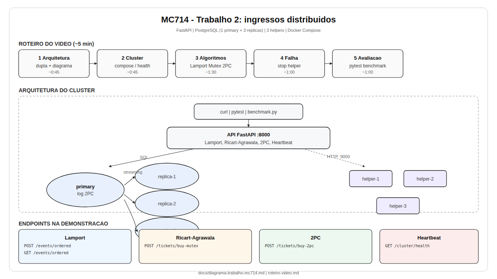
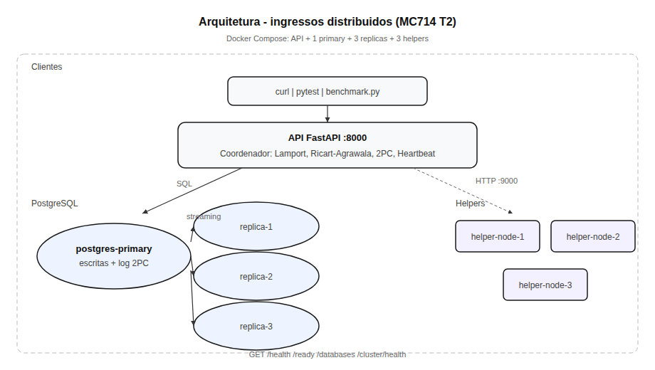
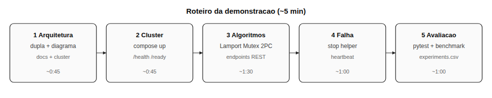
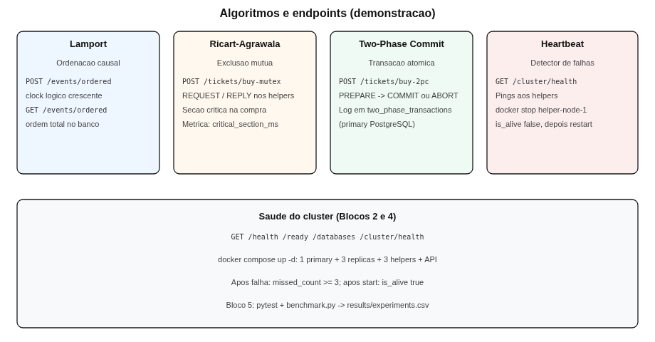

Abra este arquivo no navegador (duplo clique ou xdg-open docs/visualizar-diagramas.html). Use PNG no preview do Markdown; SVG para zoom sem perda.




Fontes em docs/diagramas/*.mmd. Render abaixo requer internet (CDN Mermaid).
flowchart TB
subgraph clients[Clientes]
CURL[curl / pytest / benchmark]
end
subgraph api[API FastAPI :8000]
API[Coordenador]
end
subgraph db[PostgreSQL]
PRI[(primary)]
R1[(replica-1)]
R2[(replica-2)]
R3[(replica-3)]
PRI --> R1
PRI --> R2
PRI --> R3
end
subgraph h[Helpers :9000]
H1[helper-1]
H2[helper-2]
H3[helper-3]
end
CURL --> API
API --> PRI
API <--> H1
API <--> H2
API <--> H3